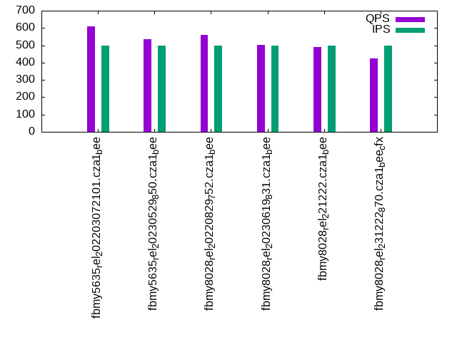

This is a report for the insert benchmark with 800M docs and 1 client(s). It is generated by scripts (bash, awk, sed) and Tufte might not be impressed. An overview of the insert benchmark is here and a short update is here. Below, by DBMS, I mean DBMS+version.config. An example is my8020.c10b40 where my means MySQL, 8020 is version 8.0.20 and c10b40 is the name for the configuration file.
The test server has 8 AMD cores, 16G RAM and an NVMe SSD. It is described here as the Beelink. The benchmark was run with 1 client and there were 1 or 3 connections per client (1 for queries or inserts without rate limits, 1+1 for rate limited inserts+deletes). It uses 1 table. It loads 800M rows per table without secondary indexes, creates 3 secondary indexes per table, then inserts 4m+1m rows per table with a delete per insert to avoid growing the table. It then does 6 read+write tests for 1800s each that do queries as fast as possible with 100,100,500,500,1000,1000 inserts/s and the same for deletes/s per client concurrent with the queries. The database is cached in memory. Clients and the DBMS share one server. The per-database configs are in the per-database subdirectories here.
The tested DBMS are:
The numbers are inserts/s for l.i0, l.i1 and l.i2, indexed docs (or rows) /s for l.x and queries/s for qr100, qp100 thru qr1000, qp1000" The values are the average rate over the entire test for inserts (IPS) and queries (QPS). The range of values for IPS and QPS is split into 3 parts: bottom 25%, middle 50%, top 25%. Values in the bottom 25% have a red background, values in the top 25% have a green background and values in the middle have no color. A gray background is used for values that can be ignored because the DBMS did not sustain the target insert rate. Red backgrounds are not used when the minimum value is within 80% of the max value.
| dbms | l.i0 | l.x | l.i1 | l.i2 | qr100 | qp100 | qr500 | qp500 | qr1000 | qp1000 |
|---|---|---|---|---|---|---|---|---|---|---|
| fbmy5635_rel_202203072101.cza1_bee | 79984 | 81691 | 27586 | 9434 | 702 | 900 | 611 | 867 | 1066 | 850 |
| fbmy5635_rel_20230529_850.cza1_bee | 76111 | 81549 | 27586 | 9091 | 600 | 837 | 534 | 824 | 398 | 816 |
| fbmy8028_rel_20220829_752.cza1_bee | 57782 | 72906 | 23256 | 8064 | 643 | 821 | 561 | 784 | 997 | 761 |
| fbmy8028_rel_20230619_831.cza1_bee | 58407 | 74150 | 23810 | 7519 | 569 | 842 | 503 | 797 | 749 | 784 |
| fbmy8028_rel_221222.cza1_bee | 57958 | 73455 | 23669 | 7576 | 565 | 844 | 488 | 808 | 412 | 790 |
| fbmy8028_rel_231222_870.cza1_bee_cfx | 58940 | 73556 | 25478 | 7874 | 485 | 849 | 424 | 818 | 321 | 800 |
This table has relative throughput, throughput for the DBMS relative to the DBMS in the first line, using the absolute throughput from the previous table. Values less than 0.95 have a yellow background. Values greater than 1.05 have a blue background.
| dbms | l.i0 | l.x | l.i1 | l.i2 | qr100 | qp100 | qr500 | qp500 | qr1000 | qp1000 |
|---|---|---|---|---|---|---|---|---|---|---|
| fbmy5635_rel_202203072101.cza1_bee | 1.00 | 1.00 | 1.00 | 1.00 | 1.00 | 1.00 | 1.00 | 1.00 | 1.00 | 1.00 |
| fbmy5635_rel_20230529_850.cza1_bee | 0.95 | 1.00 | 1.00 | 0.96 | 0.85 | 0.93 | 0.87 | 0.95 | 0.37 | 0.96 |
| fbmy8028_rel_20220829_752.cza1_bee | 0.72 | 0.89 | 0.84 | 0.85 | 0.92 | 0.91 | 0.92 | 0.90 | 0.94 | 0.90 |
| fbmy8028_rel_20230619_831.cza1_bee | 0.73 | 0.91 | 0.86 | 0.80 | 0.81 | 0.94 | 0.82 | 0.92 | 0.70 | 0.92 |
| fbmy8028_rel_221222.cza1_bee | 0.72 | 0.90 | 0.86 | 0.80 | 0.80 | 0.94 | 0.80 | 0.93 | 0.39 | 0.93 |
| fbmy8028_rel_231222_870.cza1_bee_cfx | 0.74 | 0.90 | 0.92 | 0.83 | 0.69 | 0.94 | 0.69 | 0.94 | 0.30 | 0.94 |
This lists the average rate of inserts/s for the tests that do inserts concurrent with queries. For such tests the query rate is listed in the table above. The read+write tests are setup so that the insert rate should match the target rate every second. Cells that are not at least 95% of the target have a red background to indicate a failure to satisfy the target.
| dbms | qr100.L1 | qp100.L2 | qr500.L3 | qp500.L4 | qr1000.L5 | qp1000.L6 |
|---|---|---|---|---|---|---|
| fbmy5635_rel_202203072101.cza1_bee | 100 | 100 | 499 | 499 | 997 | 998 |
| fbmy5635_rel_20230529_850.cza1_bee | 100 | 100 | 499 | 499 | 997 | 998 |
| fbmy8028_rel_20220829_752.cza1_bee | 100 | 100 | 499 | 499 | 998 | 998 |
| fbmy8028_rel_20230619_831.cza1_bee | 100 | 100 | 499 | 499 | 998 | 998 |
| fbmy8028_rel_221222.cza1_bee | 100 | 100 | 499 | 499 | 998 | 998 |
| fbmy8028_rel_231222_870.cza1_bee_cfx | 100 | 100 | 499 | 499 | 998 | 998 |
| target | 100 | 100 | 500 | 500 | 1000 | 1000 |
l.i0: load without secondary indexes. Graphs for performance per 1-second interval are here.
Average throughput:
Insert response time histogram: each cell has the percentage of responses that take <= the time in the header and max is the max response time in seconds. For the max column values in the top 25% of the range have a red background and in the bottom 25% of the range have a green background. The red background is not used when the min value is within 80% of the max value.
| dbms | 256us | 1ms | 4ms | 16ms | 64ms | 256ms | 1s | 4s | 16s | gt | max |
|---|---|---|---|---|---|---|---|---|---|---|---|
| fbmy5635_rel_202203072101.cza1_bee | nonzero | 99.872 | 0.124 | 0.001 | 0.003 | 0.131 | |||||
| fbmy5635_rel_20230529_850.cza1_bee | 99.865 | 0.130 | 0.002 | 0.002 | 0.098 | ||||||
| fbmy8028_rel_20220829_752.cza1_bee | 99.724 | 0.199 | 0.073 | 0.004 | 0.114 | ||||||
| fbmy8028_rel_20230619_831.cza1_bee | 99.726 | 0.197 | 0.073 | 0.003 | 0.099 | ||||||
| fbmy8028_rel_221222.cza1_bee | 99.725 | 0.194 | 0.077 | 0.004 | 0.135 | ||||||
| fbmy8028_rel_231222_870.cza1_bee_cfx | 99.727 | 0.196 | 0.073 | 0.003 | 0.109 |
Performance metrics for the DBMS listed above. Some are normalized by throughput, others are not. Legend for results is here.
ips qps rps rmbps wps wmbps rpq rkbpq wpi wkbpi csps cpups cspq cpupq dbgb1 dbgb2 rss maxop p50 p99 tag 79984 0 0 0.0 42.3 14.2 0.000 0.000 0.001 0.182 7879 22.6 0.099 23 23.0 23.6 1.5 0.131 80293 71922 fbmy5635_rel_202203072101.cza1_bee 76111 0 0 0.0 40.4 13.5 0.000 0.000 0.001 0.182 7533 22.0 0.099 23 23.0 23.6 1.5 0.098 76318 68922 fbmy5635_rel_20230529_850.cza1_bee 57782 0 0 0.0 44.3 13.2 0.000 0.000 0.001 0.233 6079 22.4 0.105 31 23.0 23.8 2.0 0.114 57935 51591 fbmy8028_rel_20220829_752.cza1_bee 58407 0 0 0.0 44.8 13.3 0.000 0.000 0.001 0.233 6138 22.7 0.105 31 23.0 23.8 2.0 0.099 58434 52645 fbmy8028_rel_20230619_831.cza1_bee 57958 0 0 0.0 44.5 13.2 0.000 0.000 0.001 0.234 6230 22.7 0.107 31 23.0 23.8 2.0 0.135 58144 50044 fbmy8028_rel_221222.cza1_bee 58940 0 0 0.0 45.4 13.4 0.000 0.000 0.001 0.233 6198 22.9 0.105 31 23.0 23.8 2.0 0.109 58905 53170 fbmy8028_rel_231222_870.cza1_bee_cfx
l.x: create secondary indexes.
Average throughput:
Performance metrics for the DBMS listed above. Some are normalized by throughput, others are not. Legend for results is here.
ips qps rps rmbps wps wmbps rpq rkbpq wpi wkbpi csps cpups cspq cpupq dbgb1 dbgb2 rss maxop p50 p99 tag 81691 0 109 16.8 34.7 12.7 0.001 0.210 0.000 0.159 266 11.7 0.003 11 51.0 51.6 8.8 0.002 NA NA fbmy5635_rel_202203072101.cza1_bee 81549 0 137 16.8 34.9 12.7 0.002 0.212 0.000 0.159 272 11.7 0.003 11 51.0 51.6 8.8 0.002 NA NA fbmy5635_rel_20230529_850.cza1_bee 72906 0 96 14.9 30.5 11.1 0.001 0.209 0.000 0.156 407 11.7 0.006 13 50.9 51.7 10.3 0.003 NA NA fbmy8028_rel_20220829_752.cza1_bee 74150 0 98 15.2 30.6 11.3 0.001 0.209 0.000 0.156 406 11.7 0.005 13 50.9 51.7 10.3 0.003 NA NA fbmy8028_rel_20230619_831.cza1_bee 73455 0 97 15.0 30.6 11.2 0.001 0.209 0.000 0.156 407 11.6 0.006 13 50.9 51.7 10.3 0.003 NA NA fbmy8028_rel_221222.cza1_bee 73556 0 97 15.0 29.9 11.2 0.001 0.209 0.000 0.156 411 11.7 0.006 13 50.9 51.7 10.3 0.003 NA NA fbmy8028_rel_231222_870.cza1_bee_cfx
l.i1: continue load after secondary indexes created with 50 inserts per transaction. Graphs for performance per 1-second interval are here.
Average throughput:
Insert response time histogram: each cell has the percentage of responses that take <= the time in the header and max is the max response time in seconds. For the max column values in the top 25% of the range have a red background and in the bottom 25% of the range have a green background. The red background is not used when the min value is within 80% of the max value.
| dbms | 256us | 1ms | 4ms | 16ms | 64ms | 256ms | 1s | 4s | 16s | gt | max |
|---|---|---|---|---|---|---|---|---|---|---|---|
| fbmy5635_rel_202203072101.cza1_bee | 99.785 | 0.211 | 0.003 | 0.001 | 0.076 | ||||||
| fbmy5635_rel_20230529_850.cza1_bee | 99.771 | 0.220 | 0.006 | 0.003 | 0.078 | ||||||
| fbmy8028_rel_20220829_752.cza1_bee | 99.525 | 0.450 | 0.022 | 0.003 | 0.071 | ||||||
| fbmy8028_rel_20230619_831.cza1_bee | 99.599 | 0.391 | 0.009 | 0.001 | 0.080 | ||||||
| fbmy8028_rel_221222.cza1_bee | 99.625 | 0.351 | 0.020 | 0.004 | 0.103 | ||||||
| fbmy8028_rel_231222_870.cza1_bee_cfx | 99.499 | 0.465 | 0.035 | 0.001 | 0.065 |
Delete response time histogram: each cell has the percentage of responses that take <= the time in the header and max is the max response time in seconds. For the max column values in the top 25% of the range have a red background and in the bottom 25% of the range have a green background. The red background is not used when the min value is within 80% of the max value.
| dbms | 256us | 1ms | 4ms | 16ms | 64ms | 256ms | 1s | 4s | 16s | gt | max |
|---|---|---|---|---|---|---|---|---|---|---|---|
| fbmy5635_rel_202203072101.cza1_bee | 99.715 | 0.265 | 0.019 | 0.001 | 0.076 | ||||||
| fbmy5635_rel_20230529_850.cza1_bee | 99.750 | 0.232 | 0.014 | 0.004 | 0.079 | ||||||
| fbmy8028_rel_20220829_752.cza1_bee | 99.565 | 0.424 | 0.009 | 0.003 | 0.083 | ||||||
| fbmy8028_rel_20230619_831.cza1_bee | 99.508 | 0.462 | 0.026 | 0.004 | 0.080 | ||||||
| fbmy8028_rel_221222.cza1_bee | 99.585 | 0.374 | 0.037 | 0.004 | 0.098 | ||||||
| fbmy8028_rel_231222_870.cza1_bee_cfx | 99.554 | 0.409 | 0.034 | 0.004 | 0.107 |
Performance metrics for the DBMS listed above. Some are normalized by throughput, others are not. Legend for results is here.
ips qps rps rmbps wps wmbps rpq rkbpq wpi wkbpi csps cpups cspq cpupq dbgb1 dbgb2 rss maxop p50 p99 tag 27586 0 126 1.0 190.1 67.2 0.005 0.036 0.007 2.495 12422 45.4 0.450 132 52.0 53.5 7.4 0.076 27868 23573 fbmy5635_rel_202203072101.cza1_bee 27586 0 204 1.2 186.9 65.1 0.007 0.045 0.007 2.415 12407 49.0 0.450 142 51.7 53.2 7.4 0.078 27969 24124 fbmy5635_rel_20230529_850.cza1_bee 23256 0 141 0.7 158.3 56.0 0.006 0.029 0.007 2.464 11112 42.6 0.478 147 52.0 53.7 8.1 0.071 23440 15882 fbmy8028_rel_20220829_752.cza1_bee 23810 0 140 0.7 129.2 43.3 0.006 0.029 0.005 1.863 11127 42.1 0.467 141 51.8 53.5 8.2 0.080 24023 19781 fbmy8028_rel_20230619_831.cza1_bee 23669 0 140 0.8 187.1 62.3 0.006 0.033 0.008 2.694 11220 48.7 0.474 165 51.7 53.4 8.5 0.103 23931 20877 fbmy8028_rel_221222.cza1_bee 25478 0 153 1.7 161.5 57.2 0.006 0.070 0.006 2.301 12037 43.3 0.472 136 51.4 53.2 8.2 0.065 25572 19486 fbmy8028_rel_231222_870.cza1_bee_cfx
l.i2: continue load after secondary indexes created with 5 inserts per transaction. Graphs for performance per 1-second interval are here.
Average throughput:
Insert response time histogram: each cell has the percentage of responses that take <= the time in the header and max is the max response time in seconds. For the max column values in the top 25% of the range have a red background and in the bottom 25% of the range have a green background. The red background is not used when the min value is within 80% of the max value.
| dbms | 256us | 1ms | 4ms | 16ms | 64ms | 256ms | 1s | 4s | 16s | gt | max |
|---|---|---|---|---|---|---|---|---|---|---|---|
| fbmy5635_rel_202203072101.cza1_bee | 0.098 | 99.812 | 0.032 | 0.057 | 0.001 | 0.051 | |||||
| fbmy5635_rel_20230529_850.cza1_bee | 0.017 | 99.894 | 0.029 | 0.059 | 0.001 | 0.056 | |||||
| fbmy8028_rel_20220829_752.cza1_bee | 99.841 | 0.068 | 0.090 | 0.002 | 0.048 | ||||||
| fbmy8028_rel_20230619_831.cza1_bee | 99.789 | 0.117 | 0.092 | 0.003 | 0.053 | ||||||
| fbmy8028_rel_221222.cza1_bee | 99.803 | 0.106 | 0.081 | 0.010 | 0.001 | 0.064 | |||||
| fbmy8028_rel_231222_870.cza1_bee_cfx | 99.846 | 0.064 | 0.085 | 0.006 | 0.059 |
Delete response time histogram: each cell has the percentage of responses that take <= the time in the header and max is the max response time in seconds. For the max column values in the top 25% of the range have a red background and in the bottom 25% of the range have a green background. The red background is not used when the min value is within 80% of the max value.
| dbms | 256us | 1ms | 4ms | 16ms | 64ms | 256ms | 1s | 4s | 16s | gt | max |
|---|---|---|---|---|---|---|---|---|---|---|---|
| fbmy5635_rel_202203072101.cza1_bee | 99.830 | 0.111 | 0.060 | 0.001 | 0.051 | ||||||
| fbmy5635_rel_20230529_850.cza1_bee | 99.834 | 0.104 | 0.060 | 0.002 | 0.064 | ||||||
| fbmy8028_rel_20220829_752.cza1_bee | 99.790 | 0.117 | 0.092 | 0.002 | 0.056 | ||||||
| fbmy8028_rel_20230619_831.cza1_bee | 99.695 | 0.210 | 0.092 | 0.002 | 0.001 | 0.066 | |||||
| fbmy8028_rel_221222.cza1_bee | 99.701 | 0.204 | 0.084 | 0.010 | 0.001 | 0.086 | |||||
| fbmy8028_rel_231222_870.cza1_bee_cfx | 99.779 | 0.132 | 0.084 | 0.006 | 0.001 | 0.072 |
Performance metrics for the DBMS listed above. Some are normalized by throughput, others are not. Legend for results is here.
ips qps rps rmbps wps wmbps rpq rkbpq wpi wkbpi csps cpups cspq cpupq dbgb1 dbgb2 rss maxop p50 p99 tag 9434 0 47 0.3 124.2 43.0 0.005 0.029 0.013 4.669 37757 40.3 4.002 342 52.1 52.3 7.4 0.051 9464 7891 fbmy5635_rel_202203072101.cza1_bee 9091 0 44 0.3 109.3 36.9 0.005 0.029 0.012 4.156 37179 39.7 4.090 349 52.1 52.3 7.4 0.056 9053 7550 fbmy5635_rel_20230529_850.cza1_bee 8064 0 46 0.2 112.5 38.7 0.006 0.029 0.014 4.912 33040 40.2 4.097 399 52.2 52.6 7.4 0.048 7992 6193 fbmy8028_rel_20220829_752.cza1_bee 7519 0 41 0.2 96.6 32.0 0.005 0.029 0.013 4.353 31437 39.6 4.181 421 51.8 52.2 7.4 0.053 7492 6418 fbmy8028_rel_20230619_831.cza1_bee 7576 0 42 0.2 112.2 36.2 0.006 0.029 0.015 4.890 31649 40.4 4.178 427 52.1 52.5 7.4 0.064 7582 6368 fbmy8028_rel_221222.cza1_bee 7874 0 44 0.3 67.1 21.1 0.006 0.033 0.009 2.739 32209 33.3 4.091 338 51.6 52.0 7.4 0.059 7956 6476 fbmy8028_rel_231222_870.cza1_bee_cfx
qr100.L1: range queries with 100 insert/s per client. Graphs for performance per 1-second interval are here.
Average throughput:
Query response time histogram: each cell has the percentage of responses that take <= the time in the header and max is the max response time in seconds. For max values in the top 25% of the range have a red background and in the bottom 25% of the range have a green background. The red background is not used when the min value is within 80% of the max value.
| dbms | 256us | 1ms | 4ms | 16ms | 64ms | 256ms | 1s | 4s | 16s | gt | max |
|---|---|---|---|---|---|---|---|---|---|---|---|
| fbmy5635_rel_202203072101.cza1_bee | 7.020 | 59.603 | 33.100 | 0.277 | nonzero | 0.060 | |||||
| fbmy5635_rel_20230529_850.cza1_bee | 6.361 | 60.221 | 6.985 | 26.433 | nonzero | 0.061 | |||||
| fbmy8028_rel_20220829_752.cza1_bee | 1.401 | 65.226 | 26.819 | 6.554 | nonzero | 0.058 | |||||
| fbmy8028_rel_20230619_831.cza1_bee | 1.101 | 65.510 | 0.250 | 33.139 | nonzero | 0.050 | |||||
| fbmy8028_rel_221222.cza1_bee | 0.867 | 65.791 | 0.019 | 33.323 | nonzero | 0.049 | |||||
| fbmy8028_rel_231222_870.cza1_bee_cfx | 0.355 | 66.252 | 0.025 | 33.368 | 0.010 |
Insert response time histogram: each cell has the percentage of responses that take <= the time in the header and max is the max response time in seconds. For max values in the top 25% of the range have a red background and in the bottom 25% of the range have a green background. The red background is not used when the min value is within 80% of the max value.
| dbms | 256us | 1ms | 4ms | 16ms | 64ms | 256ms | 1s | 4s | 16s | gt | max |
|---|---|---|---|---|---|---|---|---|---|---|---|
| fbmy5635_rel_202203072101.cza1_bee | 99.667 | 0.333 | 0.011 | ||||||||
| fbmy5635_rel_20230529_850.cza1_bee | 99.472 | 0.528 | 0.014 | ||||||||
| fbmy8028_rel_20220829_752.cza1_bee | 98.889 | 1.083 | 0.028 | 0.018 | |||||||
| fbmy8028_rel_20230619_831.cza1_bee | 99.639 | 0.306 | 0.056 | 0.018 | |||||||
| fbmy8028_rel_221222.cza1_bee | 99.472 | 0.472 | 0.056 | 0.023 | |||||||
| fbmy8028_rel_231222_870.cza1_bee_cfx | 99.167 | 0.806 | 0.028 | 0.018 |
Delete response time histogram: each cell has the percentage of responses that take <= the time in the header and max is the max response time in seconds. For max values in the top 25% of the range have a red background and in the bottom 25% of the range have a green background. The red background is not used when the min value is within 80% of the max value.
| dbms | 256us | 1ms | 4ms | 16ms | 64ms | 256ms | 1s | 4s | 16s | gt | max |
|---|---|---|---|---|---|---|---|---|---|---|---|
| fbmy5635_rel_202203072101.cza1_bee | 99.667 | 0.333 | 0.011 | ||||||||
| fbmy5635_rel_20230529_850.cza1_bee | 99.389 | 0.611 | 0.015 | ||||||||
| fbmy8028_rel_20220829_752.cza1_bee | 98.889 | 1.083 | 0.028 | 0.018 | |||||||
| fbmy8028_rel_20230619_831.cza1_bee | 99.611 | 0.333 | 0.056 | 0.018 | |||||||
| fbmy8028_rel_221222.cza1_bee | 99.444 | 0.500 | 0.056 | 0.023 | |||||||
| fbmy8028_rel_231222_870.cza1_bee_cfx | 99.111 | 0.861 | 0.028 | 0.018 |
Performance metrics for the DBMS listed above. Some are normalized by throughput, others are not. Legend for results is here.
ips qps rps rmbps wps wmbps rpq rkbpq wpi wkbpi csps cpups cspq cpupq dbgb1 dbgb2 rss maxop p50 p99 tag 100 702 8 0.1 4.7 0.6 0.011 0.133 0.047 6.158 2846 12.5 4.057 1426 51.8 51.9 7.4 0.060 703 623 fbmy5635_rel_202203072101.cza1_bee 100 600 8 0.1 5.1 0.7 0.013 0.157 0.051 7.347 2464 12.6 4.104 1679 51.8 51.9 7.5 0.061 607 527 fbmy5635_rel_20230529_850.cza1_bee 100 643 8 0.1 4.7 0.6 0.012 0.148 0.047 6.137 2765 12.5 4.299 1555 51.8 52.0 7.4 0.058 639 572 fbmy8028_rel_20220829_752.cza1_bee 100 569 8 0.1 4.5 0.5 0.014 0.167 0.046 5.374 2480 12.4 4.359 1744 51.8 52.0 7.4 0.050 575 496 fbmy8028_rel_20230619_831.cza1_bee 100 565 8 0.1 4.9 0.7 0.014 0.168 0.050 6.804 2476 12.4 4.383 1756 51.8 52.0 7.4 0.049 560 495 fbmy8028_rel_221222.cza1_bee 100 485 8 0.1 3.4 0.1 0.016 0.196 0.034 1.051 2148 11.8 4.430 1947 51.6 51.8 7.4 0.010 480 430 fbmy8028_rel_231222_870.cza1_bee_cfx
qp100.L2: point queries with 100 insert/s per client. Graphs for performance per 1-second interval are here.
Average throughput:
Query response time histogram: each cell has the percentage of responses that take <= the time in the header and max is the max response time in seconds. For max values in the top 25% of the range have a red background and in the bottom 25% of the range have a green background. The red background is not used when the min value is within 80% of the max value.
| dbms | 256us | 1ms | 4ms | 16ms | 64ms | 256ms | 1s | 4s | 16s | gt | max |
|---|---|---|---|---|---|---|---|---|---|---|---|
| fbmy5635_rel_202203072101.cza1_bee | 33.106 | 66.866 | 0.028 | 0.001 | 0.040 | ||||||
| fbmy5635_rel_20230529_850.cza1_bee | 18.931 | 81.033 | 0.035 | 0.001 | 0.029 | ||||||
| fbmy8028_rel_20220829_752.cza1_bee | 11.864 | 88.108 | 0.028 | nonzero | 0.020 | ||||||
| fbmy8028_rel_20230619_831.cza1_bee | 15.944 | 84.028 | 0.028 | nonzero | 0.037 | ||||||
| fbmy8028_rel_221222.cza1_bee | 15.301 | 84.681 | 0.018 | nonzero | 0.036 | ||||||
| fbmy8028_rel_231222_870.cza1_bee_cfx | 17.110 | 82.866 | 0.024 | nonzero | 0.017 |
Insert response time histogram: each cell has the percentage of responses that take <= the time in the header and max is the max response time in seconds. For max values in the top 25% of the range have a red background and in the bottom 25% of the range have a green background. The red background is not used when the min value is within 80% of the max value.
| dbms | 256us | 1ms | 4ms | 16ms | 64ms | 256ms | 1s | 4s | 16s | gt | max |
|---|---|---|---|---|---|---|---|---|---|---|---|
| fbmy5635_rel_202203072101.cza1_bee | 99.278 | 0.722 | 0.013 | ||||||||
| fbmy5635_rel_20230529_850.cza1_bee | 99.361 | 0.639 | 0.014 | ||||||||
| fbmy8028_rel_20220829_752.cza1_bee | 98.528 | 1.472 | 0.016 | ||||||||
| fbmy8028_rel_20230619_831.cza1_bee | 96.917 | 3.028 | 0.028 | 0.028 | 0.065 | ||||||
| fbmy8028_rel_221222.cza1_bee | 99.111 | 0.889 | 0.013 | ||||||||
| fbmy8028_rel_231222_870.cza1_bee_cfx | 99.111 | 0.889 | 0.013 |
Delete response time histogram: each cell has the percentage of responses that take <= the time in the header and max is the max response time in seconds. For max values in the top 25% of the range have a red background and in the bottom 25% of the range have a green background. The red background is not used when the min value is within 80% of the max value.
| dbms | 256us | 1ms | 4ms | 16ms | 64ms | 256ms | 1s | 4s | 16s | gt | max |
|---|---|---|---|---|---|---|---|---|---|---|---|
| fbmy5635_rel_202203072101.cza1_bee | 99.222 | 0.778 | 0.014 | ||||||||
| fbmy5635_rel_20230529_850.cza1_bee | 99.278 | 0.722 | 0.014 | ||||||||
| fbmy8028_rel_20220829_752.cza1_bee | 98.000 | 2.000 | 0.015 | ||||||||
| fbmy8028_rel_20230619_831.cza1_bee | 97.778 | 2.194 | 0.028 | 0.017 | |||||||
| fbmy8028_rel_221222.cza1_bee | 98.944 | 1.056 | 0.013 | ||||||||
| fbmy8028_rel_231222_870.cza1_bee_cfx | 98.583 | 1.389 | 0.028 | 0.018 |
Performance metrics for the DBMS listed above. Some are normalized by throughput, others are not. Legend for results is here.
ips qps rps rmbps wps wmbps rpq rkbpq wpi wkbpi csps cpups cspq cpupq dbgb1 dbgb2 rss maxop p50 p99 tag 100 900 6972 51.9 4.9 0.6 7.752 59.130 0.049 6.461 17483 7.4 19.436 658 51.9 51.9 8.7 0.040 911 822 fbmy5635_rel_202203072101.cza1_bee 100 837 6552 48.5 4.6 0.5 7.825 59.247 0.046 5.115 16513 6.9 19.719 659 51.9 51.9 8.5 0.029 847 751 fbmy5635_rel_20230529_850.cza1_bee 100 821 6338 47.2 4.9 0.6 7.718 58.878 0.049 6.430 16027 7.6 19.517 740 51.8 52.1 8.7 0.020 816 782 fbmy8028_rel_20220829_752.cza1_bee 100 842 6494 48.4 4.8 0.6 7.715 58.878 0.048 5.679 16452 7.6 19.546 722 51.8 52.1 8.8 0.037 847 799 fbmy8028_rel_20230619_831.cza1_bee 100 844 6548 48.6 4.7 0.5 7.762 58.942 0.047 5.335 16519 7.6 19.582 721 51.8 52.1 8.8 0.036 847 799 fbmy8028_rel_221222.cza1_bee 100 849 6520 47.9 3.8 0.2 7.683 57.789 0.038 2.532 16495 7.5 19.437 707 51.6 51.9 8.7 0.017 847 799 fbmy8028_rel_231222_870.cza1_bee_cfx
qr500.L3: range queries with 500 insert/s per client. Graphs for performance per 1-second interval are here.
Average throughput:
Query response time histogram: each cell has the percentage of responses that take <= the time in the header and max is the max response time in seconds. For max values in the top 25% of the range have a red background and in the bottom 25% of the range have a green background. The red background is not used when the min value is within 80% of the max value.
| dbms | 256us | 1ms | 4ms | 16ms | 64ms | 256ms | 1s | 4s | 16s | gt | max |
|---|---|---|---|---|---|---|---|---|---|---|---|
| fbmy5635_rel_202203072101.cza1_bee | 5.698 | 60.747 | 11.326 | 22.227 | 0.002 | 0.061 | |||||
| fbmy5635_rel_20230529_850.cza1_bee | 4.975 | 61.477 | 0.139 | 33.408 | 0.002 | 0.062 | |||||
| fbmy8028_rel_20220829_752.cza1_bee | 0.772 | 65.512 | 1.442 | 32.272 | 0.001 | 0.063 | |||||
| fbmy8028_rel_20230619_831.cza1_bee | 0.539 | 65.740 | 0.194 | 33.525 | 0.002 | 0.061 | |||||
| fbmy8028_rel_221222.cza1_bee | 0.531 | 65.818 | 0.151 | 33.498 | 0.001 | 0.063 | |||||
| fbmy8028_rel_231222_870.cza1_bee_cfx | 0.058 | 66.215 | 0.177 | 33.545 | 0.005 | 0.038 |
Insert response time histogram: each cell has the percentage of responses that take <= the time in the header and max is the max response time in seconds. For max values in the top 25% of the range have a red background and in the bottom 25% of the range have a green background. The red background is not used when the min value is within 80% of the max value.
| dbms | 256us | 1ms | 4ms | 16ms | 64ms | 256ms | 1s | 4s | 16s | gt | max |
|---|---|---|---|---|---|---|---|---|---|---|---|
| fbmy5635_rel_202203072101.cza1_bee | 99.428 | 0.561 | 0.011 | 0.020 | |||||||
| fbmy5635_rel_20230529_850.cza1_bee | 99.650 | 0.350 | 0.014 | ||||||||
| fbmy8028_rel_20220829_752.cza1_bee | 98.261 | 1.678 | 0.061 | 0.027 | |||||||
| fbmy8028_rel_20230619_831.cza1_bee | 99.294 | 0.644 | 0.061 | 0.023 | |||||||
| fbmy8028_rel_221222.cza1_bee | 98.461 | 1.494 | 0.044 | 0.024 | |||||||
| fbmy8028_rel_231222_870.cza1_bee_cfx | 98.144 | 1.800 | 0.056 | 0.018 |
Delete response time histogram: each cell has the percentage of responses that take <= the time in the header and max is the max response time in seconds. For max values in the top 25% of the range have a red background and in the bottom 25% of the range have a green background. The red background is not used when the min value is within 80% of the max value.
| dbms | 256us | 1ms | 4ms | 16ms | 64ms | 256ms | 1s | 4s | 16s | gt | max |
|---|---|---|---|---|---|---|---|---|---|---|---|
| fbmy5635_rel_202203072101.cza1_bee | 98.061 | 1.883 | 0.056 | 0.020 | |||||||
| fbmy5635_rel_20230529_850.cza1_bee | 97.950 | 2.039 | 0.011 | 0.017 | |||||||
| fbmy8028_rel_20220829_752.cza1_bee | 96.339 | 3.567 | 0.094 | 0.031 | |||||||
| fbmy8028_rel_20230619_831.cza1_bee | 97.411 | 2.444 | 0.144 | 0.024 | |||||||
| fbmy8028_rel_221222.cza1_bee | 96.867 | 3.033 | 0.100 | 0.024 | |||||||
| fbmy8028_rel_231222_870.cza1_bee_cfx | 95.611 | 4.222 | 0.167 | 0.023 |
Performance metrics for the DBMS listed above. Some are normalized by throughput, others are not. Legend for results is here.
ips qps rps rmbps wps wmbps rpq rkbpq wpi wkbpi csps cpups cspq cpupq dbgb1 dbgb2 rss maxop p50 p99 tag 499 611 25 0.5 12.2 3.6 0.041 0.916 0.024 7.442 2695 13.5 4.408 1766 52.0 52.3 8.2 0.061 608 511 fbmy5635_rel_202203072101.cza1_bee 499 534 42 0.5 11.1 3.4 0.078 0.955 0.022 7.062 2447 13.8 4.584 2068 52.0 52.3 8.2 0.062 543 447 fbmy5635_rel_20230529_850.cza1_bee 499 561 26 0.5 12.8 3.6 0.046 0.929 0.026 7.474 2647 14.2 4.720 2025 52.0 52.4 8.3 0.063 559 479 fbmy8028_rel_20220829_752.cza1_bee 499 503 23 0.5 12.3 3.6 0.045 0.970 0.025 7.319 2451 14.3 4.871 2273 52.0 52.4 8.4 0.061 511 416 fbmy8028_rel_20230619_831.cza1_bee 499 488 36 0.5 12.4 3.6 0.073 0.989 0.025 7.348 2431 14.2 4.984 2328 52.0 52.4 8.4 0.063 495 400 fbmy8028_rel_221222.cza1_bee 499 424 47 0.6 6.2 1.2 0.111 1.344 0.013 2.499 2147 13.0 5.065 2453 51.8 52.3 8.2 0.038 431 352 fbmy8028_rel_231222_870.cza1_bee_cfx
qp500.L4: point queries with 500 insert/s per client. Graphs for performance per 1-second interval are here.
Average throughput:
Query response time histogram: each cell has the percentage of responses that take <= the time in the header and max is the max response time in seconds. For max values in the top 25% of the range have a red background and in the bottom 25% of the range have a green background. The red background is not used when the min value is within 80% of the max value.
| dbms | 256us | 1ms | 4ms | 16ms | 64ms | 256ms | 1s | 4s | 16s | gt | max |
|---|---|---|---|---|---|---|---|---|---|---|---|
| fbmy5635_rel_202203072101.cza1_bee | 28.133 | 71.794 | 0.072 | 0.001 | nonzero | 0.089 | |||||
| fbmy5635_rel_20230529_850.cza1_bee | 17.765 | 82.171 | 0.064 | nonzero | nonzero | 0.096 | |||||
| fbmy8028_rel_20220829_752.cza1_bee | 9.088 | 90.836 | 0.076 | nonzero | 0.020 | ||||||
| fbmy8028_rel_20230619_831.cza1_bee | 11.053 | 88.868 | 0.079 | 0.001 | 0.018 | ||||||
| fbmy8028_rel_221222.cza1_bee | 11.331 | 88.633 | 0.036 | nonzero | 0.061 | ||||||
| fbmy8028_rel_231222_870.cza1_bee_cfx | 14.448 | 85.494 | 0.058 | nonzero | 0.021 |
Insert response time histogram: each cell has the percentage of responses that take <= the time in the header and max is the max response time in seconds. For max values in the top 25% of the range have a red background and in the bottom 25% of the range have a green background. The red background is not used when the min value is within 80% of the max value.
| dbms | 256us | 1ms | 4ms | 16ms | 64ms | 256ms | 1s | 4s | 16s | gt | max |
|---|---|---|---|---|---|---|---|---|---|---|---|
| fbmy5635_rel_202203072101.cza1_bee | 99.550 | 0.450 | 0.013 | ||||||||
| fbmy5635_rel_20230529_850.cza1_bee | 99.728 | 0.272 | 0.014 | ||||||||
| fbmy8028_rel_20220829_752.cza1_bee | 99.011 | 0.978 | 0.011 | 0.019 | |||||||
| fbmy8028_rel_20230619_831.cza1_bee | 99.500 | 0.500 | 0.010 | ||||||||
| fbmy8028_rel_221222.cza1_bee | 99.489 | 0.511 | 0.014 | ||||||||
| fbmy8028_rel_231222_870.cza1_bee_cfx | 99.761 | 0.239 | 0.011 |
Delete response time histogram: each cell has the percentage of responses that take <= the time in the header and max is the max response time in seconds. For max values in the top 25% of the range have a red background and in the bottom 25% of the range have a green background. The red background is not used when the min value is within 80% of the max value.
| dbms | 256us | 1ms | 4ms | 16ms | 64ms | 256ms | 1s | 4s | 16s | gt | max |
|---|---|---|---|---|---|---|---|---|---|---|---|
| fbmy5635_rel_202203072101.cza1_bee | 99.411 | 0.583 | 0.006 | 0.017 | |||||||
| fbmy5635_rel_20230529_850.cza1_bee | 99.611 | 0.389 | 0.014 | ||||||||
| fbmy8028_rel_20220829_752.cza1_bee | 98.911 | 1.072 | 0.017 | 0.033 | |||||||
| fbmy8028_rel_20230619_831.cza1_bee | 99.433 | 0.567 | 0.010 | ||||||||
| fbmy8028_rel_221222.cza1_bee | 99.422 | 0.578 | 0.014 | ||||||||
| fbmy8028_rel_231222_870.cza1_bee_cfx | 99.700 | 0.300 | 0.010 |
Performance metrics for the DBMS listed above. Some are normalized by throughput, others are not. Legend for results is here.
ips qps rps rmbps wps wmbps rpq rkbpq wpi wkbpi csps cpups cspq cpupq dbgb1 dbgb2 rss maxop p50 p99 tag 499 867 6729 52.3 12.9 3.3 7.763 61.755 0.026 6.819 17227 8.7 19.875 803 52.2 52.6 8.5 0.089 879 783 fbmy5635_rel_202203072101.cza1_bee 499 824 6684 49.5 12.4 3.1 8.116 61.581 0.025 6.462 16948 8.3 20.579 806 52.2 52.6 8.5 0.096 831 745 fbmy5635_rel_20230529_850.cza1_bee 499 784 6113 47.7 13.1 3.4 7.802 62.351 0.026 6.893 15834 9.0 20.207 919 52.1 52.8 8.5 0.020 783 719 fbmy8028_rel_20220829_752.cza1_bee 499 797 6242 48.9 13.4 3.5 7.832 62.861 0.027 7.117 16216 9.5 20.347 954 52.1 52.8 8.6 0.018 799 719 fbmy8028_rel_20230619_831.cza1_bee 499 808 6532 49.2 13.1 3.4 8.088 62.413 0.026 6.912 16849 9.6 20.863 951 52.1 52.8 8.6 0.061 815 751 fbmy8028_rel_221222.cza1_bee 499 818 6329 46.7 8.0 1.7 7.735 58.410 0.016 3.498 16377 8.8 20.016 860 51.9 52.6 8.4 0.021 815 735 fbmy8028_rel_231222_870.cza1_bee_cfx
qr1000.L5: range queries with 1000 insert/s per client. Graphs for performance per 1-second interval are here.
Average throughput:
Query response time histogram: each cell has the percentage of responses that take <= the time in the header and max is the max response time in seconds. For max values in the top 25% of the range have a red background and in the bottom 25% of the range have a green background. The red background is not used when the min value is within 80% of the max value.
| dbms | 256us | 1ms | 4ms | 16ms | 64ms | 256ms | 1s | 4s | 16s | gt | max |
|---|---|---|---|---|---|---|---|---|---|---|---|
| fbmy5635_rel_202203072101.cza1_bee | 6.757 | 73.639 | 11.914 | 7.688 | 0.001 | nonzero | 0.192 | ||||
| fbmy5635_rel_20230529_850.cza1_bee | 3.364 | 62.620 | 0.425 | 33.586 | 0.006 | nonzero | 0.064 | ||||
| fbmy8028_rel_20220829_752.cza1_bee | 0.790 | 76.352 | 15.165 | 7.692 | 0.001 | nonzero | 0.208 | ||||
| fbmy8028_rel_20230619_831.cza1_bee | 0.091 | 71.874 | 17.229 | 10.804 | 0.001 | nonzero | 0.184 | ||||
| fbmy8028_rel_221222.cza1_bee | 0.190 | 67.602 | 3.795 | 28.409 | 0.003 | nonzero | 0.192 | ||||
| fbmy8028_rel_231222_870.cza1_bee_cfx | 0.009 | 66.035 | 0.402 | 33.549 | 0.005 | 0.042 |
Insert response time histogram: each cell has the percentage of responses that take <= the time in the header and max is the max response time in seconds. For max values in the top 25% of the range have a red background and in the bottom 25% of the range have a green background. The red background is not used when the min value is within 80% of the max value.
| dbms | 256us | 1ms | 4ms | 16ms | 64ms | 256ms | 1s | 4s | 16s | gt | max |
|---|---|---|---|---|---|---|---|---|---|---|---|
| fbmy5635_rel_202203072101.cza1_bee | 99.692 | 0.306 | 0.003 | 0.064 | |||||||
| fbmy5635_rel_20230529_850.cza1_bee | 99.544 | 0.439 | 0.017 | 0.056 | |||||||
| fbmy8028_rel_20220829_752.cza1_bee | 99.289 | 0.683 | 0.028 | 0.051 | |||||||
| fbmy8028_rel_20230619_831.cza1_bee | 99.319 | 0.633 | 0.044 | 0.003 | 0.067 | ||||||
| fbmy8028_rel_221222.cza1_bee | 99.333 | 0.594 | 0.069 | 0.003 | 0.083 | ||||||
| fbmy8028_rel_231222_870.cza1_bee_cfx | 99.222 | 0.725 | 0.050 | 0.003 | 0.066 |
Delete response time histogram: each cell has the percentage of responses that take <= the time in the header and max is the max response time in seconds. For max values in the top 25% of the range have a red background and in the bottom 25% of the range have a green background. The red background is not used when the min value is within 80% of the max value.
| dbms | 256us | 1ms | 4ms | 16ms | 64ms | 256ms | 1s | 4s | 16s | gt | max |
|---|---|---|---|---|---|---|---|---|---|---|---|
| fbmy5635_rel_202203072101.cza1_bee | 98.592 | 1.394 | 0.006 | 0.008 | 0.075 | ||||||
| fbmy5635_rel_20230529_850.cza1_bee | 98.239 | 1.733 | 0.028 | 0.062 | |||||||
| fbmy8028_rel_20220829_752.cza1_bee | 98.594 | 1.361 | 0.044 | 0.059 | |||||||
| fbmy8028_rel_20230619_831.cza1_bee | 98.042 | 1.897 | 0.058 | 0.003 | 0.080 | ||||||
| fbmy8028_rel_221222.cza1_bee | 98.222 | 1.692 | 0.083 | 0.003 | 0.068 | ||||||
| fbmy8028_rel_231222_870.cza1_bee_cfx | 97.303 | 2.575 | 0.122 | 0.052 |
Performance metrics for the DBMS listed above. Some are normalized by throughput, others are not. Legend for results is here.
ips qps rps rmbps wps wmbps rpq rkbpq wpi wkbpi csps cpups cspq cpupq dbgb1 dbgb2 rss maxop p50 p99 tag 997 1066 79 6.6 32.6 11.8 0.074 6.382 0.033 12.168 4739 19.4 4.446 1456 52.1 53.0 8.1 0.192 1055 416 fbmy5635_rel_202203072101.cza1_bee 997 398 165 1.1 20.1 7.2 0.415 2.793 0.020 7.402 2394 16.0 6.020 3219 52.8 53.6 8.4 0.064 400 320 fbmy5635_rel_20230529_850.cza1_bee 998 997 79 6.5 32.3 11.4 0.079 6.633 0.032 11.671 4642 20.1 4.657 1613 52.6 53.6 8.2 0.208 1039 384 fbmy8028_rel_20220829_752.cza1_bee 998 749 68 4.8 22.6 7.3 0.090 6.574 0.023 7.464 3624 18.3 4.839 1955 52.1 53.2 8.4 0.184 847 336 fbmy8028_rel_20230619_831.cza1_bee 998 412 197 1.4 22.0 7.5 0.479 3.436 0.022 7.696 2676 16.6 6.499 3225 52.8 53.8 8.3 0.192 416 320 fbmy8028_rel_221222.cza1_bee 998 321 42 0.6 9.3 2.4 0.130 1.756 0.009 2.479 1927 13.9 6.004 3464 52.2 53.3 8.3 0.042 320 256 fbmy8028_rel_231222_870.cza1_bee_cfx
qp1000.L6: point queries with 1000 insert/s per client. Graphs for performance per 1-second interval are here.
Average throughput:
Query response time histogram: each cell has the percentage of responses that take <= the time in the header and max is the max response time in seconds. For max values in the top 25% of the range have a red background and in the bottom 25% of the range have a green background. The red background is not used when the min value is within 80% of the max value.
| dbms | 256us | 1ms | 4ms | 16ms | 64ms | 256ms | 1s | 4s | 16s | gt | max |
|---|---|---|---|---|---|---|---|---|---|---|---|
| fbmy5635_rel_202203072101.cza1_bee | 23.995 | 75.932 | 0.072 | 0.001 | 0.051 | ||||||
| fbmy5635_rel_20230529_850.cza1_bee | 15.163 | 84.771 | 0.065 | 0.001 | nonzero | 0.112 | |||||
| fbmy8028_rel_20220829_752.cza1_bee | 6.340 | 93.576 | 0.084 | 0.001 | 0.026 | ||||||
| fbmy8028_rel_20230619_831.cza1_bee | 9.095 | 90.825 | 0.079 | nonzero | 0.029 | ||||||
| fbmy8028_rel_221222.cza1_bee | 8.633 | 91.314 | 0.052 | nonzero | nonzero | 0.102 | |||||
| fbmy8028_rel_231222_870.cza1_bee_cfx | 11.396 | 88.510 | 0.093 | nonzero | 0.027 |
Insert response time histogram: each cell has the percentage of responses that take <= the time in the header and max is the max response time in seconds. For max values in the top 25% of the range have a red background and in the bottom 25% of the range have a green background. The red background is not used when the min value is within 80% of the max value.
| dbms | 256us | 1ms | 4ms | 16ms | 64ms | 256ms | 1s | 4s | 16s | gt | max |
|---|---|---|---|---|---|---|---|---|---|---|---|
| fbmy5635_rel_202203072101.cza1_bee | 99.331 | 0.664 | 0.006 | 0.043 | |||||||
| fbmy5635_rel_20230529_850.cza1_bee | 99.689 | 0.308 | 0.003 | 0.045 | |||||||
| fbmy8028_rel_20220829_752.cza1_bee | 99.669 | 0.328 | 0.003 | 0.081 | |||||||
| fbmy8028_rel_20230619_831.cza1_bee | 99.442 | 0.556 | 0.003 | 0.073 | |||||||
| fbmy8028_rel_221222.cza1_bee | 99.283 | 0.517 | 0.197 | 0.003 | 0.080 | ||||||
| fbmy8028_rel_231222_870.cza1_bee_cfx | 99.667 | 0.331 | 0.003 | 0.080 |
Delete response time histogram: each cell has the percentage of responses that take <= the time in the header and max is the max response time in seconds. For max values in the top 25% of the range have a red background and in the bottom 25% of the range have a green background. The red background is not used when the min value is within 80% of the max value.
| dbms | 256us | 1ms | 4ms | 16ms | 64ms | 256ms | 1s | 4s | 16s | gt | max |
|---|---|---|---|---|---|---|---|---|---|---|---|
| fbmy5635_rel_202203072101.cza1_bee | 99.294 | 0.703 | 0.003 | 0.044 | |||||||
| fbmy5635_rel_20230529_850.cza1_bee | 99.619 | 0.378 | 0.003 | 0.045 | |||||||
| fbmy8028_rel_20220829_752.cza1_bee | 99.614 | 0.383 | 0.003 | 0.088 | |||||||
| fbmy8028_rel_20230619_831.cza1_bee | 99.453 | 0.542 | 0.003 | 0.003 | 0.088 | ||||||
| fbmy8028_rel_221222.cza1_bee | 99.175 | 0.625 | 0.197 | 0.003 | 0.088 | ||||||
| fbmy8028_rel_231222_870.cza1_bee_cfx | 99.581 | 0.417 | 0.003 | 0.082 |
Performance metrics for the DBMS listed above. Some are normalized by throughput, others are not. Legend for results is here.
ips qps rps rmbps wps wmbps rpq rkbpq wpi wkbpi csps cpups cspq cpupq dbgb1 dbgb2 rss maxop p50 p99 tag 998 850 6731 54.4 22.3 6.7 7.922 65.520 0.022 6.842 17446 10.4 20.534 979 52.4 53.7 8.5 0.051 863 592 fbmy5635_rel_202203072101.cza1_bee 998 816 7249 51.9 24.7 7.4 8.879 65.046 0.025 7.596 18252 12.5 22.356 1225 52.5 53.8 8.5 0.112 815 735 fbmy5635_rel_20230529_850.cza1_bee 998 761 6065 46.0 24.5 7.2 7.965 61.870 0.025 7.377 15992 11.0 21.003 1156 52.4 53.8 8.7 0.026 767 496 fbmy8028_rel_20220829_752.cza1_bee 998 784 6194 48.7 20.8 6.0 7.905 63.597 0.021 6.167 16324 11.8 20.835 1205 52.3 53.8 8.7 0.029 799 587 fbmy8028_rel_20230619_831.cza1_bee 998 790 7100 52.8 29.0 8.8 8.986 68.488 0.029 9.017 18278 14.5 23.134 1468 53.4 54.8 8.7 0.102 799 656 fbmy8028_rel_221222.cza1_bee 998 800 7325 53.1 24.3 7.4 9.161 68.025 0.024 7.594 18708 14.6 23.396 1461 52.1 53.5 8.5 0.027 799 655 fbmy8028_rel_231222_870.cza1_bee_cfx
l.i0: load without secondary indexes
Performance metrics for all DBMS, not just the ones listed above. Some are normalized by throughput, others are not. Legend for results is here.
ips qps rps rmbps wps wmbps rpq rkbpq wpi wkbpi csps cpups cspq cpupq dbgb1 dbgb2 rss maxop p50 p99 tag 79984 0 0 0.0 42.3 14.2 0.000 0.000 0.001 0.182 7879 22.6 0.099 23 23.0 23.6 1.5 0.131 80293 71922 fbmy5635_rel_202203072101.cza1_bee 76111 0 0 0.0 40.4 13.5 0.000 0.000 0.001 0.182 7533 22.0 0.099 23 23.0 23.6 1.5 0.098 76318 68922 fbmy5635_rel_20230529_850.cza1_bee 57782 0 0 0.0 44.3 13.2 0.000 0.000 0.001 0.233 6079 22.4 0.105 31 23.0 23.8 2.0 0.114 57935 51591 fbmy8028_rel_20220829_752.cza1_bee 58407 0 0 0.0 44.8 13.3 0.000 0.000 0.001 0.233 6138 22.7 0.105 31 23.0 23.8 2.0 0.099 58434 52645 fbmy8028_rel_20230619_831.cza1_bee 57958 0 0 0.0 44.5 13.2 0.000 0.000 0.001 0.234 6230 22.7 0.107 31 23.0 23.8 2.0 0.135 58144 50044 fbmy8028_rel_221222.cza1_bee 58940 0 0 0.0 45.4 13.4 0.000 0.000 0.001 0.233 6198 22.9 0.105 31 23.0 23.8 2.0 0.109 58905 53170 fbmy8028_rel_231222_870.cza1_bee_cfx
l.x: create secondary indexes
Performance metrics for all DBMS, not just the ones listed above. Some are normalized by throughput, others are not. Legend for results is here.
ips qps rps rmbps wps wmbps rpq rkbpq wpi wkbpi csps cpups cspq cpupq dbgb1 dbgb2 rss maxop p50 p99 tag 81691 0 109 16.8 34.7 12.7 0.001 0.210 0.000 0.159 266 11.7 0.003 11 51.0 51.6 8.8 0.002 NA NA fbmy5635_rel_202203072101.cza1_bee 81549 0 137 16.8 34.9 12.7 0.002 0.212 0.000 0.159 272 11.7 0.003 11 51.0 51.6 8.8 0.002 NA NA fbmy5635_rel_20230529_850.cza1_bee 72906 0 96 14.9 30.5 11.1 0.001 0.209 0.000 0.156 407 11.7 0.006 13 50.9 51.7 10.3 0.003 NA NA fbmy8028_rel_20220829_752.cza1_bee 74150 0 98 15.2 30.6 11.3 0.001 0.209 0.000 0.156 406 11.7 0.005 13 50.9 51.7 10.3 0.003 NA NA fbmy8028_rel_20230619_831.cza1_bee 73455 0 97 15.0 30.6 11.2 0.001 0.209 0.000 0.156 407 11.6 0.006 13 50.9 51.7 10.3 0.003 NA NA fbmy8028_rel_221222.cza1_bee 73556 0 97 15.0 29.9 11.2 0.001 0.209 0.000 0.156 411 11.7 0.006 13 50.9 51.7 10.3 0.003 NA NA fbmy8028_rel_231222_870.cza1_bee_cfx
l.i1: continue load after secondary indexes created with 50 inserts per transaction
Performance metrics for all DBMS, not just the ones listed above. Some are normalized by throughput, others are not. Legend for results is here.
ips qps rps rmbps wps wmbps rpq rkbpq wpi wkbpi csps cpups cspq cpupq dbgb1 dbgb2 rss maxop p50 p99 tag 27586 0 126 1.0 190.1 67.2 0.005 0.036 0.007 2.495 12422 45.4 0.450 132 52.0 53.5 7.4 0.076 27868 23573 fbmy5635_rel_202203072101.cza1_bee 27586 0 204 1.2 186.9 65.1 0.007 0.045 0.007 2.415 12407 49.0 0.450 142 51.7 53.2 7.4 0.078 27969 24124 fbmy5635_rel_20230529_850.cza1_bee 23256 0 141 0.7 158.3 56.0 0.006 0.029 0.007 2.464 11112 42.6 0.478 147 52.0 53.7 8.1 0.071 23440 15882 fbmy8028_rel_20220829_752.cza1_bee 23810 0 140 0.7 129.2 43.3 0.006 0.029 0.005 1.863 11127 42.1 0.467 141 51.8 53.5 8.2 0.080 24023 19781 fbmy8028_rel_20230619_831.cza1_bee 23669 0 140 0.8 187.1 62.3 0.006 0.033 0.008 2.694 11220 48.7 0.474 165 51.7 53.4 8.5 0.103 23931 20877 fbmy8028_rel_221222.cza1_bee 25478 0 153 1.7 161.5 57.2 0.006 0.070 0.006 2.301 12037 43.3 0.472 136 51.4 53.2 8.2 0.065 25572 19486 fbmy8028_rel_231222_870.cza1_bee_cfx
l.i2: continue load after secondary indexes created with 5 inserts per transaction
Performance metrics for all DBMS, not just the ones listed above. Some are normalized by throughput, others are not. Legend for results is here.
ips qps rps rmbps wps wmbps rpq rkbpq wpi wkbpi csps cpups cspq cpupq dbgb1 dbgb2 rss maxop p50 p99 tag 9434 0 47 0.3 124.2 43.0 0.005 0.029 0.013 4.669 37757 40.3 4.002 342 52.1 52.3 7.4 0.051 9464 7891 fbmy5635_rel_202203072101.cza1_bee 9091 0 44 0.3 109.3 36.9 0.005 0.029 0.012 4.156 37179 39.7 4.090 349 52.1 52.3 7.4 0.056 9053 7550 fbmy5635_rel_20230529_850.cza1_bee 8064 0 46 0.2 112.5 38.7 0.006 0.029 0.014 4.912 33040 40.2 4.097 399 52.2 52.6 7.4 0.048 7992 6193 fbmy8028_rel_20220829_752.cza1_bee 7519 0 41 0.2 96.6 32.0 0.005 0.029 0.013 4.353 31437 39.6 4.181 421 51.8 52.2 7.4 0.053 7492 6418 fbmy8028_rel_20230619_831.cza1_bee 7576 0 42 0.2 112.2 36.2 0.006 0.029 0.015 4.890 31649 40.4 4.178 427 52.1 52.5 7.4 0.064 7582 6368 fbmy8028_rel_221222.cza1_bee 7874 0 44 0.3 67.1 21.1 0.006 0.033 0.009 2.739 32209 33.3 4.091 338 51.6 52.0 7.4 0.059 7956 6476 fbmy8028_rel_231222_870.cza1_bee_cfx
qr100.L1: range queries with 100 insert/s per client
Performance metrics for all DBMS, not just the ones listed above. Some are normalized by throughput, others are not. Legend for results is here.
ips qps rps rmbps wps wmbps rpq rkbpq wpi wkbpi csps cpups cspq cpupq dbgb1 dbgb2 rss maxop p50 p99 tag 100 702 8 0.1 4.7 0.6 0.011 0.133 0.047 6.158 2846 12.5 4.057 1426 51.8 51.9 7.4 0.060 703 623 fbmy5635_rel_202203072101.cza1_bee 100 600 8 0.1 5.1 0.7 0.013 0.157 0.051 7.347 2464 12.6 4.104 1679 51.8 51.9 7.5 0.061 607 527 fbmy5635_rel_20230529_850.cza1_bee 100 643 8 0.1 4.7 0.6 0.012 0.148 0.047 6.137 2765 12.5 4.299 1555 51.8 52.0 7.4 0.058 639 572 fbmy8028_rel_20220829_752.cza1_bee 100 569 8 0.1 4.5 0.5 0.014 0.167 0.046 5.374 2480 12.4 4.359 1744 51.8 52.0 7.4 0.050 575 496 fbmy8028_rel_20230619_831.cza1_bee 100 565 8 0.1 4.9 0.7 0.014 0.168 0.050 6.804 2476 12.4 4.383 1756 51.8 52.0 7.4 0.049 560 495 fbmy8028_rel_221222.cza1_bee 100 485 8 0.1 3.4 0.1 0.016 0.196 0.034 1.051 2148 11.8 4.430 1947 51.6 51.8 7.4 0.010 480 430 fbmy8028_rel_231222_870.cza1_bee_cfx
qp100.L2: point queries with 100 insert/s per client
Performance metrics for all DBMS, not just the ones listed above. Some are normalized by throughput, others are not. Legend for results is here.
ips qps rps rmbps wps wmbps rpq rkbpq wpi wkbpi csps cpups cspq cpupq dbgb1 dbgb2 rss maxop p50 p99 tag 100 900 6972 51.9 4.9 0.6 7.752 59.130 0.049 6.461 17483 7.4 19.436 658 51.9 51.9 8.7 0.040 911 822 fbmy5635_rel_202203072101.cza1_bee 100 837 6552 48.5 4.6 0.5 7.825 59.247 0.046 5.115 16513 6.9 19.719 659 51.9 51.9 8.5 0.029 847 751 fbmy5635_rel_20230529_850.cza1_bee 100 821 6338 47.2 4.9 0.6 7.718 58.878 0.049 6.430 16027 7.6 19.517 740 51.8 52.1 8.7 0.020 816 782 fbmy8028_rel_20220829_752.cza1_bee 100 842 6494 48.4 4.8 0.6 7.715 58.878 0.048 5.679 16452 7.6 19.546 722 51.8 52.1 8.8 0.037 847 799 fbmy8028_rel_20230619_831.cza1_bee 100 844 6548 48.6 4.7 0.5 7.762 58.942 0.047 5.335 16519 7.6 19.582 721 51.8 52.1 8.8 0.036 847 799 fbmy8028_rel_221222.cza1_bee 100 849 6520 47.9 3.8 0.2 7.683 57.789 0.038 2.532 16495 7.5 19.437 707 51.6 51.9 8.7 0.017 847 799 fbmy8028_rel_231222_870.cza1_bee_cfx
qr500.L3: range queries with 500 insert/s per client
Performance metrics for all DBMS, not just the ones listed above. Some are normalized by throughput, others are not. Legend for results is here.
ips qps rps rmbps wps wmbps rpq rkbpq wpi wkbpi csps cpups cspq cpupq dbgb1 dbgb2 rss maxop p50 p99 tag 499 611 25 0.5 12.2 3.6 0.041 0.916 0.024 7.442 2695 13.5 4.408 1766 52.0 52.3 8.2 0.061 608 511 fbmy5635_rel_202203072101.cza1_bee 499 534 42 0.5 11.1 3.4 0.078 0.955 0.022 7.062 2447 13.8 4.584 2068 52.0 52.3 8.2 0.062 543 447 fbmy5635_rel_20230529_850.cza1_bee 499 561 26 0.5 12.8 3.6 0.046 0.929 0.026 7.474 2647 14.2 4.720 2025 52.0 52.4 8.3 0.063 559 479 fbmy8028_rel_20220829_752.cza1_bee 499 503 23 0.5 12.3 3.6 0.045 0.970 0.025 7.319 2451 14.3 4.871 2273 52.0 52.4 8.4 0.061 511 416 fbmy8028_rel_20230619_831.cza1_bee 499 488 36 0.5 12.4 3.6 0.073 0.989 0.025 7.348 2431 14.2 4.984 2328 52.0 52.4 8.4 0.063 495 400 fbmy8028_rel_221222.cza1_bee 499 424 47 0.6 6.2 1.2 0.111 1.344 0.013 2.499 2147 13.0 5.065 2453 51.8 52.3 8.2 0.038 431 352 fbmy8028_rel_231222_870.cza1_bee_cfx
qp500.L4: point queries with 500 insert/s per client
Performance metrics for all DBMS, not just the ones listed above. Some are normalized by throughput, others are not. Legend for results is here.
ips qps rps rmbps wps wmbps rpq rkbpq wpi wkbpi csps cpups cspq cpupq dbgb1 dbgb2 rss maxop p50 p99 tag 499 867 6729 52.3 12.9 3.3 7.763 61.755 0.026 6.819 17227 8.7 19.875 803 52.2 52.6 8.5 0.089 879 783 fbmy5635_rel_202203072101.cza1_bee 499 824 6684 49.5 12.4 3.1 8.116 61.581 0.025 6.462 16948 8.3 20.579 806 52.2 52.6 8.5 0.096 831 745 fbmy5635_rel_20230529_850.cza1_bee 499 784 6113 47.7 13.1 3.4 7.802 62.351 0.026 6.893 15834 9.0 20.207 919 52.1 52.8 8.5 0.020 783 719 fbmy8028_rel_20220829_752.cza1_bee 499 797 6242 48.9 13.4 3.5 7.832 62.861 0.027 7.117 16216 9.5 20.347 954 52.1 52.8 8.6 0.018 799 719 fbmy8028_rel_20230619_831.cza1_bee 499 808 6532 49.2 13.1 3.4 8.088 62.413 0.026 6.912 16849 9.6 20.863 951 52.1 52.8 8.6 0.061 815 751 fbmy8028_rel_221222.cza1_bee 499 818 6329 46.7 8.0 1.7 7.735 58.410 0.016 3.498 16377 8.8 20.016 860 51.9 52.6 8.4 0.021 815 735 fbmy8028_rel_231222_870.cza1_bee_cfx
qr1000.L5: range queries with 1000 insert/s per client
Performance metrics for all DBMS, not just the ones listed above. Some are normalized by throughput, others are not. Legend for results is here.
ips qps rps rmbps wps wmbps rpq rkbpq wpi wkbpi csps cpups cspq cpupq dbgb1 dbgb2 rss maxop p50 p99 tag 997 1066 79 6.6 32.6 11.8 0.074 6.382 0.033 12.168 4739 19.4 4.446 1456 52.1 53.0 8.1 0.192 1055 416 fbmy5635_rel_202203072101.cza1_bee 997 398 165 1.1 20.1 7.2 0.415 2.793 0.020 7.402 2394 16.0 6.020 3219 52.8 53.6 8.4 0.064 400 320 fbmy5635_rel_20230529_850.cza1_bee 998 997 79 6.5 32.3 11.4 0.079 6.633 0.032 11.671 4642 20.1 4.657 1613 52.6 53.6 8.2 0.208 1039 384 fbmy8028_rel_20220829_752.cza1_bee 998 749 68 4.8 22.6 7.3 0.090 6.574 0.023 7.464 3624 18.3 4.839 1955 52.1 53.2 8.4 0.184 847 336 fbmy8028_rel_20230619_831.cza1_bee 998 412 197 1.4 22.0 7.5 0.479 3.436 0.022 7.696 2676 16.6 6.499 3225 52.8 53.8 8.3 0.192 416 320 fbmy8028_rel_221222.cza1_bee 998 321 42 0.6 9.3 2.4 0.130 1.756 0.009 2.479 1927 13.9 6.004 3464 52.2 53.3 8.3 0.042 320 256 fbmy8028_rel_231222_870.cza1_bee_cfx
qp1000.L6: point queries with 1000 insert/s per client
Performance metrics for all DBMS, not just the ones listed above. Some are normalized by throughput, others are not. Legend for results is here.
ips qps rps rmbps wps wmbps rpq rkbpq wpi wkbpi csps cpups cspq cpupq dbgb1 dbgb2 rss maxop p50 p99 tag 998 850 6731 54.4 22.3 6.7 7.922 65.520 0.022 6.842 17446 10.4 20.534 979 52.4 53.7 8.5 0.051 863 592 fbmy5635_rel_202203072101.cza1_bee 998 816 7249 51.9 24.7 7.4 8.879 65.046 0.025 7.596 18252 12.5 22.356 1225 52.5 53.8 8.5 0.112 815 735 fbmy5635_rel_20230529_850.cza1_bee 998 761 6065 46.0 24.5 7.2 7.965 61.870 0.025 7.377 15992 11.0 21.003 1156 52.4 53.8 8.7 0.026 767 496 fbmy8028_rel_20220829_752.cza1_bee 998 784 6194 48.7 20.8 6.0 7.905 63.597 0.021 6.167 16324 11.8 20.835 1205 52.3 53.8 8.7 0.029 799 587 fbmy8028_rel_20230619_831.cza1_bee 998 790 7100 52.8 29.0 8.8 8.986 68.488 0.029 9.017 18278 14.5 23.134 1468 53.4 54.8 8.7 0.102 799 656 fbmy8028_rel_221222.cza1_bee 998 800 7325 53.1 24.3 7.4 9.161 68.025 0.024 7.594 18708 14.6 23.396 1461 52.1 53.5 8.5 0.027 799 655 fbmy8028_rel_231222_870.cza1_bee_cfx
Insert response time histogram
256us 1ms 4ms 16ms 64ms 256ms 1s 4s 16s gt max tag 0.000 nonzero 99.872 0.124 0.001 0.003 0.000 0.000 0.000 0.000 0.131 fbmy5635_rel_202203072101.cza1_bee 0.000 0.000 99.865 0.130 0.002 0.002 0.000 0.000 0.000 0.000 0.098 fbmy5635_rel_20230529_850.cza1_bee 0.000 0.000 99.724 0.199 0.073 0.004 0.000 0.000 0.000 0.000 0.114 fbmy8028_rel_20220829_752.cza1_bee 0.000 0.000 99.726 0.197 0.073 0.003 0.000 0.000 0.000 0.000 0.099 fbmy8028_rel_20230619_831.cza1_bee 0.000 0.000 99.725 0.194 0.077 0.004 0.000 0.000 0.000 0.000 0.135 fbmy8028_rel_221222.cza1_bee 0.000 0.000 99.727 0.196 0.073 0.003 0.000 0.000 0.000 0.000 0.109 fbmy8028_rel_231222_870.cza1_bee_cfx
TODO - determine whether there is data for create index response time
Insert response time histogram
256us 1ms 4ms 16ms 64ms 256ms 1s 4s 16s gt max tag 0.000 0.000 99.785 0.211 0.003 0.001 0.000 0.000 0.000 0.000 0.076 fbmy5635_rel_202203072101.cza1_bee 0.000 0.000 99.771 0.220 0.006 0.003 0.000 0.000 0.000 0.000 0.078 fbmy5635_rel_20230529_850.cza1_bee 0.000 0.000 99.525 0.450 0.022 0.003 0.000 0.000 0.000 0.000 0.071 fbmy8028_rel_20220829_752.cza1_bee 0.000 0.000 99.599 0.391 0.009 0.001 0.000 0.000 0.000 0.000 0.080 fbmy8028_rel_20230619_831.cza1_bee 0.000 0.000 99.625 0.351 0.020 0.004 0.000 0.000 0.000 0.000 0.103 fbmy8028_rel_221222.cza1_bee 0.000 0.000 99.499 0.465 0.035 0.001 0.000 0.000 0.000 0.000 0.065 fbmy8028_rel_231222_870.cza1_bee_cfx
Delete response time histogram
256us 1ms 4ms 16ms 64ms 256ms 1s 4s 16s gt max tag 0.000 0.000 99.715 0.265 0.019 0.001 0.000 0.000 0.000 0.000 0.076 fbmy5635_rel_202203072101.cza1_bee 0.000 0.000 99.750 0.232 0.014 0.004 0.000 0.000 0.000 0.000 0.079 fbmy5635_rel_20230529_850.cza1_bee 0.000 0.000 99.565 0.424 0.009 0.003 0.000 0.000 0.000 0.000 0.083 fbmy8028_rel_20220829_752.cza1_bee 0.000 0.000 99.508 0.462 0.026 0.004 0.000 0.000 0.000 0.000 0.080 fbmy8028_rel_20230619_831.cza1_bee 0.000 0.000 99.585 0.374 0.037 0.004 0.000 0.000 0.000 0.000 0.098 fbmy8028_rel_221222.cza1_bee 0.000 0.000 99.554 0.409 0.034 0.004 0.000 0.000 0.000 0.000 0.107 fbmy8028_rel_231222_870.cza1_bee_cfx
Insert response time histogram
256us 1ms 4ms 16ms 64ms 256ms 1s 4s 16s gt max tag 0.098 99.812 0.032 0.057 0.001 0.000 0.000 0.000 0.000 0.000 0.051 fbmy5635_rel_202203072101.cza1_bee 0.017 99.894 0.029 0.059 0.001 0.000 0.000 0.000 0.000 0.000 0.056 fbmy5635_rel_20230529_850.cza1_bee 0.000 99.841 0.068 0.090 0.002 0.000 0.000 0.000 0.000 0.000 0.048 fbmy8028_rel_20220829_752.cza1_bee 0.000 99.789 0.117 0.092 0.003 0.000 0.000 0.000 0.000 0.000 0.053 fbmy8028_rel_20230619_831.cza1_bee 0.000 99.803 0.106 0.081 0.010 0.001 0.000 0.000 0.000 0.000 0.064 fbmy8028_rel_221222.cza1_bee 0.000 99.846 0.064 0.085 0.006 0.000 0.000 0.000 0.000 0.000 0.059 fbmy8028_rel_231222_870.cza1_bee_cfx
Delete response time histogram
256us 1ms 4ms 16ms 64ms 256ms 1s 4s 16s gt max tag 0.000 99.830 0.111 0.060 0.001 0.000 0.000 0.000 0.000 0.000 0.051 fbmy5635_rel_202203072101.cza1_bee 0.000 99.834 0.104 0.060 0.002 0.000 0.000 0.000 0.000 0.000 0.064 fbmy5635_rel_20230529_850.cza1_bee 0.000 99.790 0.117 0.092 0.002 0.000 0.000 0.000 0.000 0.000 0.056 fbmy8028_rel_20220829_752.cza1_bee 0.000 99.695 0.210 0.092 0.002 0.001 0.000 0.000 0.000 0.000 0.066 fbmy8028_rel_20230619_831.cza1_bee 0.000 99.701 0.204 0.084 0.010 0.001 0.000 0.000 0.000 0.000 0.086 fbmy8028_rel_221222.cza1_bee 0.000 99.779 0.132 0.084 0.006 0.001 0.000 0.000 0.000 0.000 0.072 fbmy8028_rel_231222_870.cza1_bee_cfx
Query response time histogram
256us 1ms 4ms 16ms 64ms 256ms 1s 4s 16s gt max tag 7.020 59.603 33.100 0.277 nonzero 0.000 0.000 0.000 0.000 0.000 0.060 fbmy5635_rel_202203072101.cza1_bee 6.361 60.221 6.985 26.433 nonzero 0.000 0.000 0.000 0.000 0.000 0.061 fbmy5635_rel_20230529_850.cza1_bee 1.401 65.226 26.819 6.554 nonzero 0.000 0.000 0.000 0.000 0.000 0.058 fbmy8028_rel_20220829_752.cza1_bee 1.101 65.510 0.250 33.139 nonzero 0.000 0.000 0.000 0.000 0.000 0.050 fbmy8028_rel_20230619_831.cza1_bee 0.867 65.791 0.019 33.323 nonzero 0.000 0.000 0.000 0.000 0.000 0.049 fbmy8028_rel_221222.cza1_bee 0.355 66.252 0.025 33.368 0.000 0.000 0.000 0.000 0.000 0.000 0.010 fbmy8028_rel_231222_870.cza1_bee_cfx
Insert response time histogram
256us 1ms 4ms 16ms 64ms 256ms 1s 4s 16s gt max tag 0.000 0.000 99.667 0.333 0.000 0.000 0.000 0.000 0.000 0.000 0.011 fbmy5635_rel_202203072101.cza1_bee 0.000 0.000 99.472 0.528 0.000 0.000 0.000 0.000 0.000 0.000 0.014 fbmy5635_rel_20230529_850.cza1_bee 0.000 0.000 98.889 1.083 0.028 0.000 0.000 0.000 0.000 0.000 0.018 fbmy8028_rel_20220829_752.cza1_bee 0.000 0.000 99.639 0.306 0.056 0.000 0.000 0.000 0.000 0.000 0.018 fbmy8028_rel_20230619_831.cza1_bee 0.000 0.000 99.472 0.472 0.056 0.000 0.000 0.000 0.000 0.000 0.023 fbmy8028_rel_221222.cza1_bee 0.000 0.000 99.167 0.806 0.028 0.000 0.000 0.000 0.000 0.000 0.018 fbmy8028_rel_231222_870.cza1_bee_cfx
Delete response time histogram
256us 1ms 4ms 16ms 64ms 256ms 1s 4s 16s gt max tag 0.000 0.000 99.667 0.333 0.000 0.000 0.000 0.000 0.000 0.000 0.011 fbmy5635_rel_202203072101.cza1_bee 0.000 0.000 99.389 0.611 0.000 0.000 0.000 0.000 0.000 0.000 0.015 fbmy5635_rel_20230529_850.cza1_bee 0.000 0.000 98.889 1.083 0.028 0.000 0.000 0.000 0.000 0.000 0.018 fbmy8028_rel_20220829_752.cza1_bee 0.000 0.000 99.611 0.333 0.056 0.000 0.000 0.000 0.000 0.000 0.018 fbmy8028_rel_20230619_831.cza1_bee 0.000 0.000 99.444 0.500 0.056 0.000 0.000 0.000 0.000 0.000 0.023 fbmy8028_rel_221222.cza1_bee 0.000 0.000 99.111 0.861 0.028 0.000 0.000 0.000 0.000 0.000 0.018 fbmy8028_rel_231222_870.cza1_bee_cfx
Query response time histogram
256us 1ms 4ms 16ms 64ms 256ms 1s 4s 16s gt max tag 0.000 33.106 66.866 0.028 0.001 0.000 0.000 0.000 0.000 0.000 0.040 fbmy5635_rel_202203072101.cza1_bee 0.000 18.931 81.033 0.035 0.001 0.000 0.000 0.000 0.000 0.000 0.029 fbmy5635_rel_20230529_850.cza1_bee 0.000 11.864 88.108 0.028 nonzero 0.000 0.000 0.000 0.000 0.000 0.020 fbmy8028_rel_20220829_752.cza1_bee 0.000 15.944 84.028 0.028 nonzero 0.000 0.000 0.000 0.000 0.000 0.037 fbmy8028_rel_20230619_831.cza1_bee 0.000 15.301 84.681 0.018 nonzero 0.000 0.000 0.000 0.000 0.000 0.036 fbmy8028_rel_221222.cza1_bee 0.000 17.110 82.866 0.024 nonzero 0.000 0.000 0.000 0.000 0.000 0.017 fbmy8028_rel_231222_870.cza1_bee_cfx
Insert response time histogram
256us 1ms 4ms 16ms 64ms 256ms 1s 4s 16s gt max tag 0.000 0.000 99.278 0.722 0.000 0.000 0.000 0.000 0.000 0.000 0.013 fbmy5635_rel_202203072101.cza1_bee 0.000 0.000 99.361 0.639 0.000 0.000 0.000 0.000 0.000 0.000 0.014 fbmy5635_rel_20230529_850.cza1_bee 0.000 0.000 98.528 1.472 0.000 0.000 0.000 0.000 0.000 0.000 0.016 fbmy8028_rel_20220829_752.cza1_bee 0.000 0.000 96.917 3.028 0.028 0.028 0.000 0.000 0.000 0.000 0.065 fbmy8028_rel_20230619_831.cza1_bee 0.000 0.000 99.111 0.889 0.000 0.000 0.000 0.000 0.000 0.000 0.013 fbmy8028_rel_221222.cza1_bee 0.000 0.000 99.111 0.889 0.000 0.000 0.000 0.000 0.000 0.000 0.013 fbmy8028_rel_231222_870.cza1_bee_cfx
Delete response time histogram
256us 1ms 4ms 16ms 64ms 256ms 1s 4s 16s gt max tag 0.000 0.000 99.222 0.778 0.000 0.000 0.000 0.000 0.000 0.000 0.014 fbmy5635_rel_202203072101.cza1_bee 0.000 0.000 99.278 0.722 0.000 0.000 0.000 0.000 0.000 0.000 0.014 fbmy5635_rel_20230529_850.cza1_bee 0.000 0.000 98.000 2.000 0.000 0.000 0.000 0.000 0.000 0.000 0.015 fbmy8028_rel_20220829_752.cza1_bee 0.000 0.000 97.778 2.194 0.028 0.000 0.000 0.000 0.000 0.000 0.017 fbmy8028_rel_20230619_831.cza1_bee 0.000 0.000 98.944 1.056 0.000 0.000 0.000 0.000 0.000 0.000 0.013 fbmy8028_rel_221222.cza1_bee 0.000 0.000 98.583 1.389 0.028 0.000 0.000 0.000 0.000 0.000 0.018 fbmy8028_rel_231222_870.cza1_bee_cfx
Query response time histogram
256us 1ms 4ms 16ms 64ms 256ms 1s 4s 16s gt max tag 5.698 60.747 11.326 22.227 0.002 0.000 0.000 0.000 0.000 0.000 0.061 fbmy5635_rel_202203072101.cza1_bee 4.975 61.477 0.139 33.408 0.002 0.000 0.000 0.000 0.000 0.000 0.062 fbmy5635_rel_20230529_850.cza1_bee 0.772 65.512 1.442 32.272 0.001 0.000 0.000 0.000 0.000 0.000 0.063 fbmy8028_rel_20220829_752.cza1_bee 0.539 65.740 0.194 33.525 0.002 0.000 0.000 0.000 0.000 0.000 0.061 fbmy8028_rel_20230619_831.cza1_bee 0.531 65.818 0.151 33.498 0.001 0.000 0.000 0.000 0.000 0.000 0.063 fbmy8028_rel_221222.cza1_bee 0.058 66.215 0.177 33.545 0.005 0.000 0.000 0.000 0.000 0.000 0.038 fbmy8028_rel_231222_870.cza1_bee_cfx
Insert response time histogram
256us 1ms 4ms 16ms 64ms 256ms 1s 4s 16s gt max tag 0.000 0.000 99.428 0.561 0.011 0.000 0.000 0.000 0.000 0.000 0.020 fbmy5635_rel_202203072101.cza1_bee 0.000 0.000 99.650 0.350 0.000 0.000 0.000 0.000 0.000 0.000 0.014 fbmy5635_rel_20230529_850.cza1_bee 0.000 0.000 98.261 1.678 0.061 0.000 0.000 0.000 0.000 0.000 0.027 fbmy8028_rel_20220829_752.cza1_bee 0.000 0.000 99.294 0.644 0.061 0.000 0.000 0.000 0.000 0.000 0.023 fbmy8028_rel_20230619_831.cza1_bee 0.000 0.000 98.461 1.494 0.044 0.000 0.000 0.000 0.000 0.000 0.024 fbmy8028_rel_221222.cza1_bee 0.000 0.000 98.144 1.800 0.056 0.000 0.000 0.000 0.000 0.000 0.018 fbmy8028_rel_231222_870.cza1_bee_cfx
Delete response time histogram
256us 1ms 4ms 16ms 64ms 256ms 1s 4s 16s gt max tag 0.000 0.000 98.061 1.883 0.056 0.000 0.000 0.000 0.000 0.000 0.020 fbmy5635_rel_202203072101.cza1_bee 0.000 0.000 97.950 2.039 0.011 0.000 0.000 0.000 0.000 0.000 0.017 fbmy5635_rel_20230529_850.cza1_bee 0.000 0.000 96.339 3.567 0.094 0.000 0.000 0.000 0.000 0.000 0.031 fbmy8028_rel_20220829_752.cza1_bee 0.000 0.000 97.411 2.444 0.144 0.000 0.000 0.000 0.000 0.000 0.024 fbmy8028_rel_20230619_831.cza1_bee 0.000 0.000 96.867 3.033 0.100 0.000 0.000 0.000 0.000 0.000 0.024 fbmy8028_rel_221222.cza1_bee 0.000 0.000 95.611 4.222 0.167 0.000 0.000 0.000 0.000 0.000 0.023 fbmy8028_rel_231222_870.cza1_bee_cfx
Query response time histogram
256us 1ms 4ms 16ms 64ms 256ms 1s 4s 16s gt max tag 0.000 28.133 71.794 0.072 0.001 nonzero 0.000 0.000 0.000 0.000 0.089 fbmy5635_rel_202203072101.cza1_bee 0.000 17.765 82.171 0.064 nonzero nonzero 0.000 0.000 0.000 0.000 0.096 fbmy5635_rel_20230529_850.cza1_bee 0.000 9.088 90.836 0.076 nonzero 0.000 0.000 0.000 0.000 0.000 0.020 fbmy8028_rel_20220829_752.cza1_bee 0.000 11.053 88.868 0.079 0.001 0.000 0.000 0.000 0.000 0.000 0.018 fbmy8028_rel_20230619_831.cza1_bee 0.000 11.331 88.633 0.036 nonzero 0.000 0.000 0.000 0.000 0.000 0.061 fbmy8028_rel_221222.cza1_bee 0.000 14.448 85.494 0.058 nonzero 0.000 0.000 0.000 0.000 0.000 0.021 fbmy8028_rel_231222_870.cza1_bee_cfx
Insert response time histogram
256us 1ms 4ms 16ms 64ms 256ms 1s 4s 16s gt max tag 0.000 0.000 99.550 0.450 0.000 0.000 0.000 0.000 0.000 0.000 0.013 fbmy5635_rel_202203072101.cza1_bee 0.000 0.000 99.728 0.272 0.000 0.000 0.000 0.000 0.000 0.000 0.014 fbmy5635_rel_20230529_850.cza1_bee 0.000 0.000 99.011 0.978 0.011 0.000 0.000 0.000 0.000 0.000 0.019 fbmy8028_rel_20220829_752.cza1_bee 0.000 0.000 99.500 0.500 0.000 0.000 0.000 0.000 0.000 0.000 0.010 fbmy8028_rel_20230619_831.cza1_bee 0.000 0.000 99.489 0.511 0.000 0.000 0.000 0.000 0.000 0.000 0.014 fbmy8028_rel_221222.cza1_bee 0.000 0.000 99.761 0.239 0.000 0.000 0.000 0.000 0.000 0.000 0.011 fbmy8028_rel_231222_870.cza1_bee_cfx
Delete response time histogram
256us 1ms 4ms 16ms 64ms 256ms 1s 4s 16s gt max tag 0.000 0.000 99.411 0.583 0.006 0.000 0.000 0.000 0.000 0.000 0.017 fbmy5635_rel_202203072101.cza1_bee 0.000 0.000 99.611 0.389 0.000 0.000 0.000 0.000 0.000 0.000 0.014 fbmy5635_rel_20230529_850.cza1_bee 0.000 0.000 98.911 1.072 0.017 0.000 0.000 0.000 0.000 0.000 0.033 fbmy8028_rel_20220829_752.cza1_bee 0.000 0.000 99.433 0.567 0.000 0.000 0.000 0.000 0.000 0.000 0.010 fbmy8028_rel_20230619_831.cza1_bee 0.000 0.000 99.422 0.578 0.000 0.000 0.000 0.000 0.000 0.000 0.014 fbmy8028_rel_221222.cza1_bee 0.000 0.000 99.700 0.300 0.000 0.000 0.000 0.000 0.000 0.000 0.010 fbmy8028_rel_231222_870.cza1_bee_cfx
Query response time histogram
256us 1ms 4ms 16ms 64ms 256ms 1s 4s 16s gt max tag 6.757 73.639 11.914 7.688 0.001 nonzero 0.000 0.000 0.000 0.000 0.192 fbmy5635_rel_202203072101.cza1_bee 3.364 62.620 0.425 33.586 0.006 nonzero 0.000 0.000 0.000 0.000 0.064 fbmy5635_rel_20230529_850.cza1_bee 0.790 76.352 15.165 7.692 0.001 nonzero 0.000 0.000 0.000 0.000 0.208 fbmy8028_rel_20220829_752.cza1_bee 0.091 71.874 17.229 10.804 0.001 nonzero 0.000 0.000 0.000 0.000 0.184 fbmy8028_rel_20230619_831.cza1_bee 0.190 67.602 3.795 28.409 0.003 nonzero 0.000 0.000 0.000 0.000 0.192 fbmy8028_rel_221222.cza1_bee 0.009 66.035 0.402 33.549 0.005 0.000 0.000 0.000 0.000 0.000 0.042 fbmy8028_rel_231222_870.cza1_bee_cfx
Insert response time histogram
256us 1ms 4ms 16ms 64ms 256ms 1s 4s 16s gt max tag 0.000 0.000 99.692 0.306 0.000 0.003 0.000 0.000 0.000 0.000 0.064 fbmy5635_rel_202203072101.cza1_bee 0.000 0.000 99.544 0.439 0.017 0.000 0.000 0.000 0.000 0.000 0.056 fbmy5635_rel_20230529_850.cza1_bee 0.000 0.000 99.289 0.683 0.028 0.000 0.000 0.000 0.000 0.000 0.051 fbmy8028_rel_20220829_752.cza1_bee 0.000 0.000 99.319 0.633 0.044 0.003 0.000 0.000 0.000 0.000 0.067 fbmy8028_rel_20230619_831.cza1_bee 0.000 0.000 99.333 0.594 0.069 0.003 0.000 0.000 0.000 0.000 0.083 fbmy8028_rel_221222.cza1_bee 0.000 0.000 99.222 0.725 0.050 0.003 0.000 0.000 0.000 0.000 0.066 fbmy8028_rel_231222_870.cza1_bee_cfx
Delete response time histogram
256us 1ms 4ms 16ms 64ms 256ms 1s 4s 16s gt max tag 0.000 0.000 98.592 1.394 0.006 0.008 0.000 0.000 0.000 0.000 0.075 fbmy5635_rel_202203072101.cza1_bee 0.000 0.000 98.239 1.733 0.028 0.000 0.000 0.000 0.000 0.000 0.062 fbmy5635_rel_20230529_850.cza1_bee 0.000 0.000 98.594 1.361 0.044 0.000 0.000 0.000 0.000 0.000 0.059 fbmy8028_rel_20220829_752.cza1_bee 0.000 0.000 98.042 1.897 0.058 0.003 0.000 0.000 0.000 0.000 0.080 fbmy8028_rel_20230619_831.cza1_bee 0.000 0.000 98.222 1.692 0.083 0.003 0.000 0.000 0.000 0.000 0.068 fbmy8028_rel_221222.cza1_bee 0.000 0.000 97.303 2.575 0.122 0.000 0.000 0.000 0.000 0.000 0.052 fbmy8028_rel_231222_870.cza1_bee_cfx
Query response time histogram
256us 1ms 4ms 16ms 64ms 256ms 1s 4s 16s gt max tag 0.000 23.995 75.932 0.072 0.001 0.000 0.000 0.000 0.000 0.000 0.051 fbmy5635_rel_202203072101.cza1_bee 0.000 15.163 84.771 0.065 0.001 nonzero 0.000 0.000 0.000 0.000 0.112 fbmy5635_rel_20230529_850.cza1_bee 0.000 6.340 93.576 0.084 0.001 0.000 0.000 0.000 0.000 0.000 0.026 fbmy8028_rel_20220829_752.cza1_bee 0.000 9.095 90.825 0.079 nonzero 0.000 0.000 0.000 0.000 0.000 0.029 fbmy8028_rel_20230619_831.cza1_bee 0.000 8.633 91.314 0.052 nonzero nonzero 0.000 0.000 0.000 0.000 0.102 fbmy8028_rel_221222.cza1_bee 0.000 11.396 88.510 0.093 nonzero 0.000 0.000 0.000 0.000 0.000 0.027 fbmy8028_rel_231222_870.cza1_bee_cfx
Insert response time histogram
256us 1ms 4ms 16ms 64ms 256ms 1s 4s 16s gt max tag 0.000 0.000 99.331 0.664 0.006 0.000 0.000 0.000 0.000 0.000 0.043 fbmy5635_rel_202203072101.cza1_bee 0.000 0.000 99.689 0.308 0.003 0.000 0.000 0.000 0.000 0.000 0.045 fbmy5635_rel_20230529_850.cza1_bee 0.000 0.000 99.669 0.328 0.000 0.003 0.000 0.000 0.000 0.000 0.081 fbmy8028_rel_20220829_752.cza1_bee 0.000 0.000 99.442 0.556 0.000 0.003 0.000 0.000 0.000 0.000 0.073 fbmy8028_rel_20230619_831.cza1_bee 0.000 0.000 99.283 0.517 0.197 0.003 0.000 0.000 0.000 0.000 0.080 fbmy8028_rel_221222.cza1_bee 0.000 0.000 99.667 0.331 0.000 0.003 0.000 0.000 0.000 0.000 0.080 fbmy8028_rel_231222_870.cza1_bee_cfx
Delete response time histogram
256us 1ms 4ms 16ms 64ms 256ms 1s 4s 16s gt max tag 0.000 0.000 99.294 0.703 0.003 0.000 0.000 0.000 0.000 0.000 0.044 fbmy5635_rel_202203072101.cza1_bee 0.000 0.000 99.619 0.378 0.003 0.000 0.000 0.000 0.000 0.000 0.045 fbmy5635_rel_20230529_850.cza1_bee 0.000 0.000 99.614 0.383 0.000 0.003 0.000 0.000 0.000 0.000 0.088 fbmy8028_rel_20220829_752.cza1_bee 0.000 0.000 99.453 0.542 0.003 0.003 0.000 0.000 0.000 0.000 0.088 fbmy8028_rel_20230619_831.cza1_bee 0.000 0.000 99.175 0.625 0.197 0.003 0.000 0.000 0.000 0.000 0.088 fbmy8028_rel_221222.cza1_bee 0.000 0.000 99.581 0.417 0.000 0.003 0.000 0.000 0.000 0.000 0.082 fbmy8028_rel_231222_870.cza1_bee_cfx